The slide of the lecture is on the left, the same figure or table on the right, computed in the browser from the same data. The ▶ button moves the parameter step by step; the “Worked example” boxes redo the calculation with the numbers of the chapter. No foundation model runs in the browser: the page uses the forecasts, quantiles and scores saved by the chapter’s code.
Transformers in brief · From numbers to tokens · The main model families · Probabilistic forecasts and their scores · Zero-shot forecasts on real data · Rolling-origin evaluation on seven series · Leakage and contamination
Transformers in brief
Worked example: attention weights
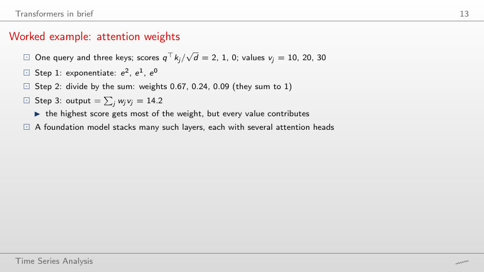
Worked example
Answer
It falls to 10.5, close to the value of the first key (10): its weight rises to 95%. With c = 0 all weights are 1/3 and the output is the mean, 20; dividing by √d keeps the scores moderate, so that the other positions also contribute.
From numbers to tokens
Worked example: scaling and tokens
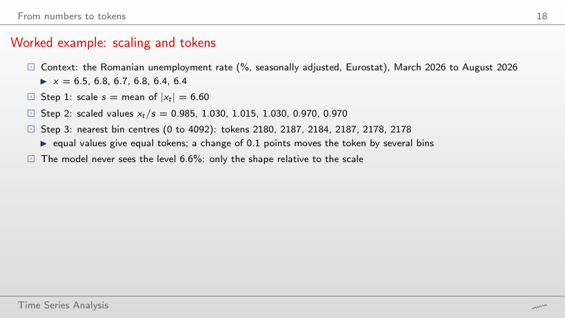
Worked example
Answer
A single one: the bins have width 1.5 and all scaled values (from 0.970 to 1.030) fall in the same bin. With 4093 bins (width 0.0073) there are 4 tokens; a change of 0.1 points in the rate moves the scaled value by 2.07 bins.
Scaling and quantisation on real data
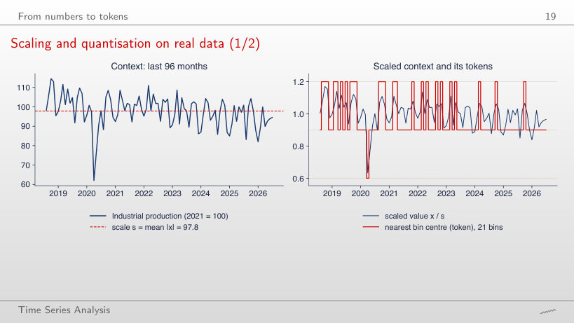
Answer
Two (three for 96 months): without April 2020 the scaled values stay between 0.87 and 1.11, that is in two bins of width 0.30. The scale adapts to the context (s = 94.1 instead of 97.8), so the tokens describe the shape relative to the recent level, not the level.
Patching the Romanian electricity load
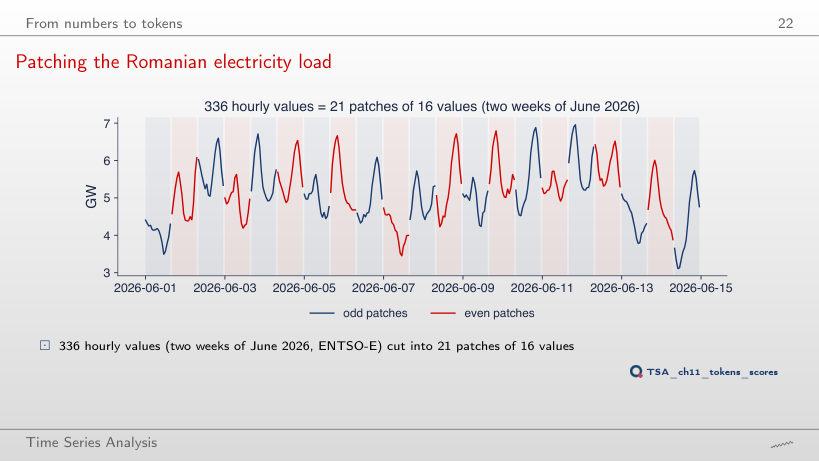
Answer
7 = 168/24, against 11 for P = 16 (168/16 = 10.5, rounded up). With P = 24 the patches align with the daily cycle and the 336 hours give 14 patches; the attention comparisons fall from 441 to 196.
The main model families
The families side by side
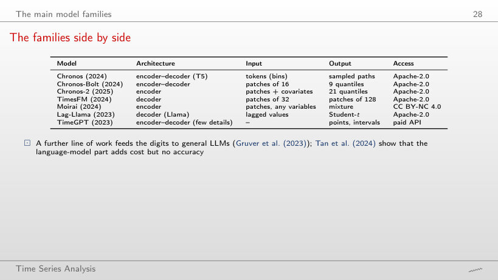
Answer
32 = 512/16, with 32² = 1,024 comparisons in one attention layer, against 512² = 262,144 for one token per value (Chronos). TimesFM, with patches of 32, receives 16.
Probabilistic forecasts and their scores
The weighted quantile loss (WQL)
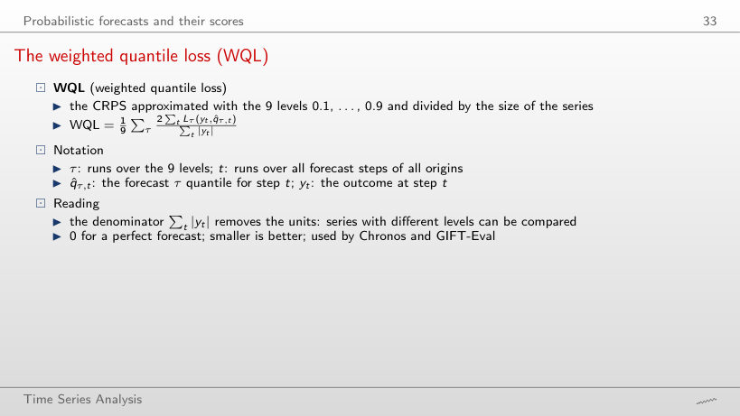
Worked example
Answer
0.87: WQL 0.0019 against 0.0022 for the naive forecast, although the MASE ratio of the median is 1.05. The WQL scores all quantiles, and the narrower bands of Chronos-2 win even when the median is no better.
The pinball loss and the CRPS
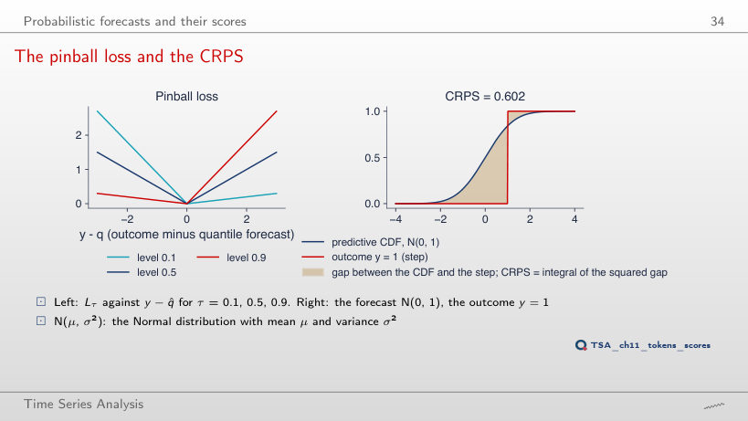
Answer
0.234, not 0: the CRPS scores the whole distribution, and a forecast with standard deviation 1 remains uncertain even when its median hits the outcome. Only a forecast that puts all its mass on y has CRPS 0; at y = 1 the score is 0.602.
Worked example: pinball losses
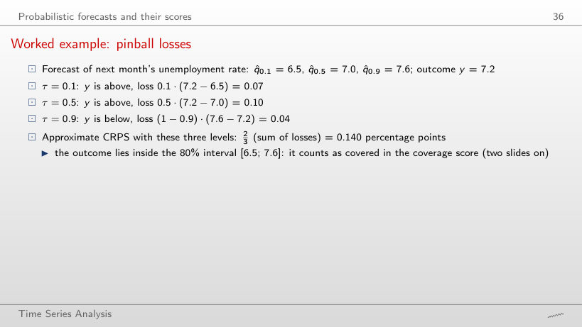
Worked example
Answer
Level 0.5: 0.5·(8.0 − 7.0) = 0.50, against 0.9·(8.0 − 7.6) = 0.36 and 0.1·(8.0 − 6.5) = 0.15. Exceeding the 0.9 quantile costs a lot per unit, but the distance to it is small; the approximate CRPS rises to 0.673.
Point accuracy: the MASE
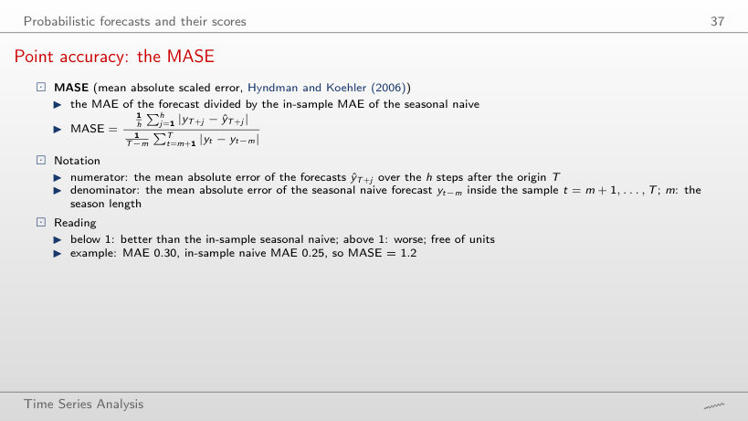
Worked example
Answer
2.13 (1.31 with m = 168): the denominator falls from 0.421 GW to 0.260 GW, the mean error of the one-hour forecast inside the context, while the forecasts stay the same. The value of the MASE and the threshold 1 make sense only together with the stated m.
Coverage and relative scores
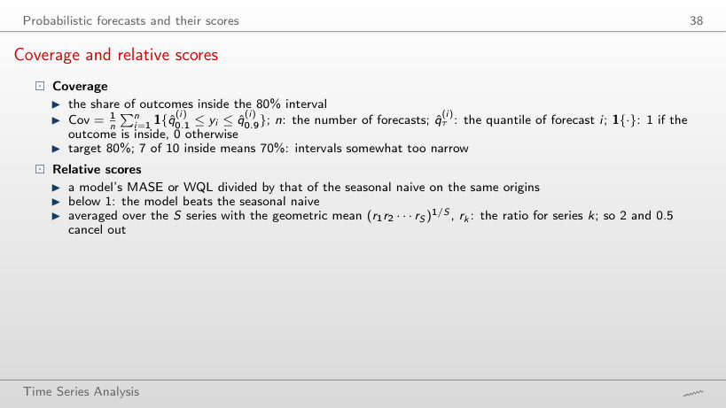
Worked example
Answer
75.2%, the highest of the six models, but still below 80%; Chronos-2 has 65.0%, the seasonal naive 64.7%. The 2020 shock and the 2021 jump fall outside the bands of every model.
Zero-shot forecasts on real data
Seven series for the test
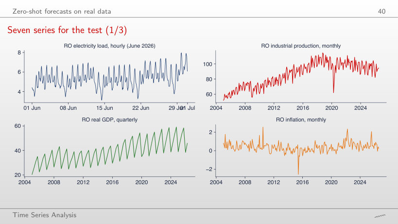
Answer
Larger: 0.43 GW against 0.24 GW. Load changes little from one hour to the next, while within a week the weather and the level change; so the denominator of the MASE with m = 168 is larger than the error of the one-hour forecast. For industrial production it is the other way round (4.86 with m = 12, 6.37 with m = 1), because the yearly seasonality dominates.
Romanian electricity load, 48 hours ahead
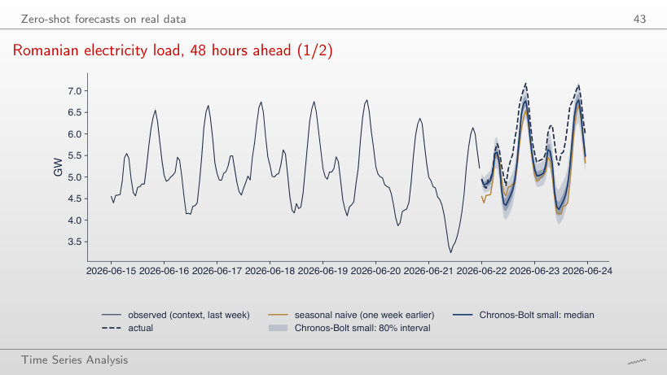
Answer
100% (6 of 6 hours), against 29% over 48 hours; the MASE is 0.11 in the first 6 hours. The forecast starts from the last observed values and the gap to the actual load builds up during the day: the coverage of a single origin depends strongly on the horizon.
Worked example: scoring one hour
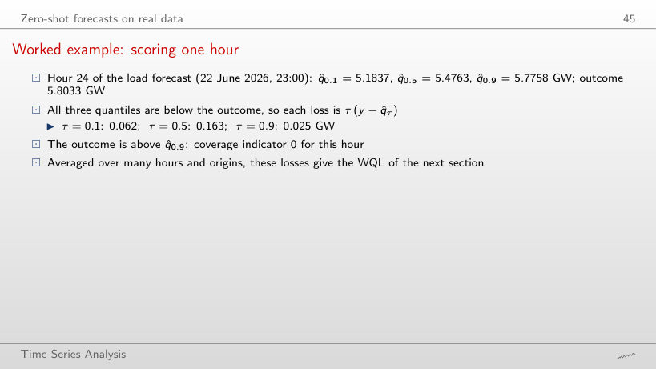
Worked example
Answer
1: the outcome lies in the 80% band and the losses are small (0.017, 0.010, 0.012 GW). The forecast starts from the last values; only during the day does the actual load rise above the band, as at hour 24 (0.062, 0.163, 0.025 GW).
Romanian industrial production, 12 months ahead
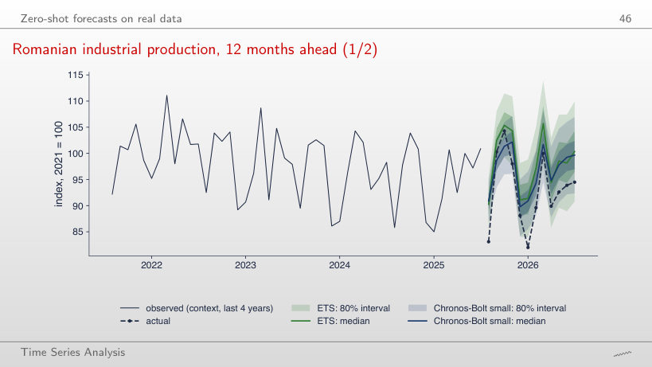
Answer
The seasonal naive: 0.43, against 0.79 for ETS and 0.95 for Chronos-Bolt. For this origin the previous year forecasts the next months best; over 12 months the naive forecast stays first (0.67), while ETS (1.20) and Chronos-Bolt (1.04) swap places.
EUR/RON, 20 days ahead
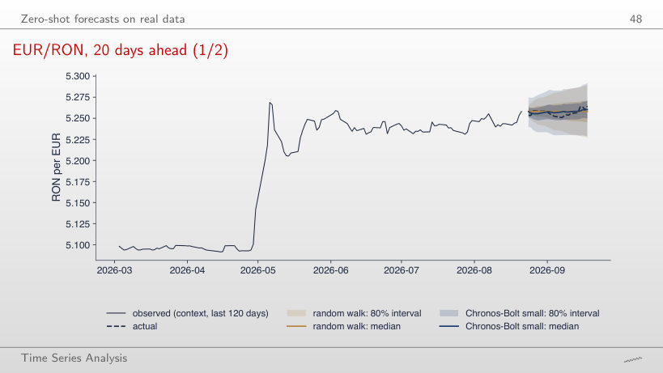
Answer
Wider: 0.044 against 0.031. The band of the random walk grows with √h, from 0.014 on the first day, while the band of Chronos-Bolt starts at 0.035; the two become almost equal only at 20 days (0.064 and 0.063).
Rolling-origin evaluation on seven series
Results: WQL relative to the seasonal naive
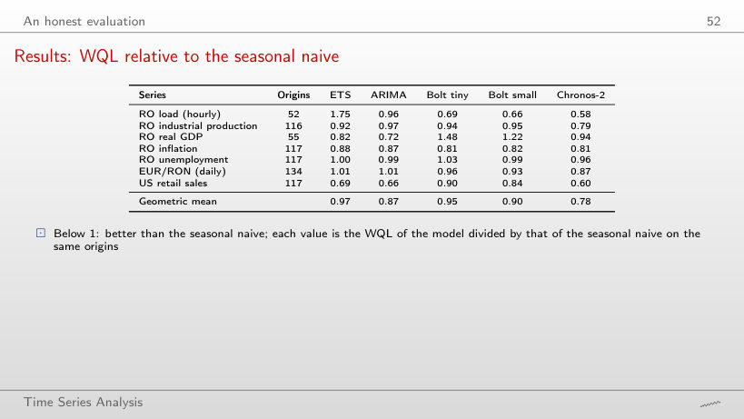
Answer
EUR/RON: 1.05, although the WQL ratio is 0.87. On the other six series the MASE ratio of Chronos-2 is below 1, from 0.59 (US retail sales) to 0.98 (unemployment).
MASE and WQL by series and model
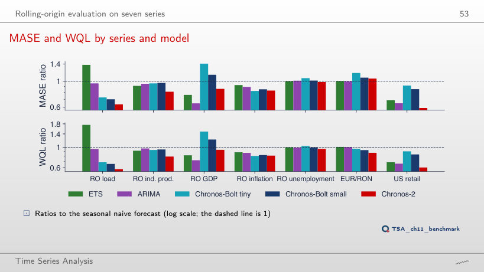
Answer
Still Chronos-2 (0.78), followed by ARIMA (0.92); Chronos-Bolt small moves to 1.06, worse than the seasonal naive, and ETS to 1.01. With 175 origins instead of 708 the order of the other models changes: one ranking does not describe every period.
Coverage of the 80% intervals
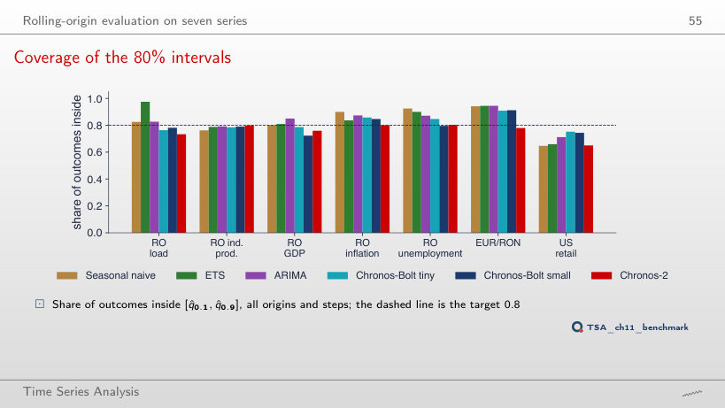
Answer
94%: the naive intervals become too wide, because their standard deviation is estimated on the whole context, which contains the shocks of 2020–2022. Chronos-2 reaches 83%: coverage depends on the test period, not only on the model.
Romanian load: error by horizon
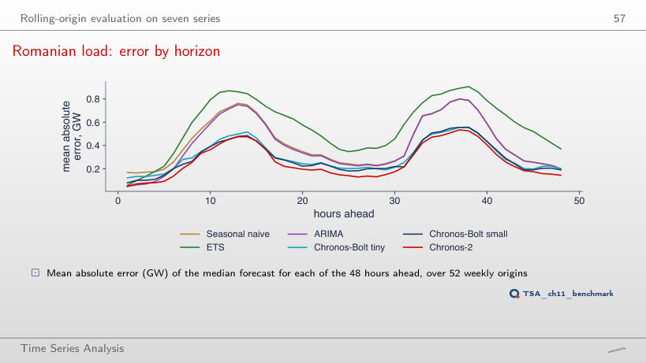
Answer
From hour 41, against hour 4 over all origins. In the second half every model has larger errors (the naive forecast 0.32 GW at hour 24, against 0.19 in the first half), while Chronos-2 stays at 0.15 GW.
The required context length
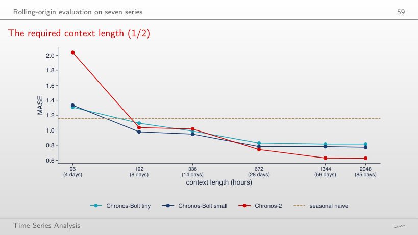
Answer
All three: Chronos-Bolt tiny 1.09, Chronos-Bolt small 0.98, Chronos-2 1.04. With 96 hours none of them did; the context of 8 days contains the first full weekly cycle. Chronos-2, the best with 2048 hours (0.63), is only second here: it needs the longest context.
Size and accuracy
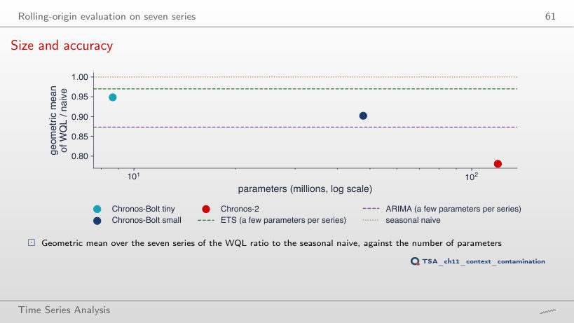
Answer
No: the geometric mean of the WQL ratio becomes 1.04 (0.90 over all origins), while Chronos-2 stays at 0.83 and ARIMA at 0.91. The number of parameters does not guarantee a gain; Chronos-2 also differs in architecture and training data.
Leakage and contamination
A contamination check: before and after the release
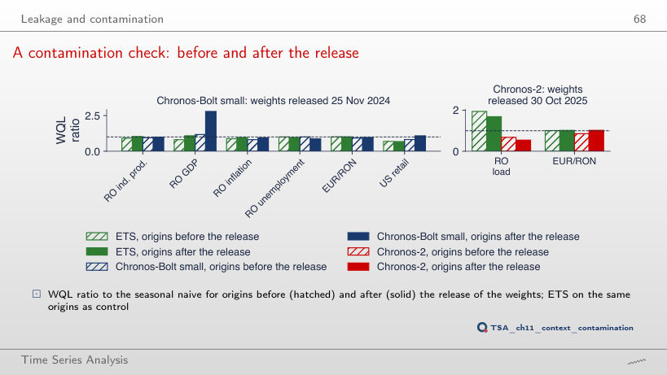
Answer
1.08, as after the real release (0.81 before): the jump also appears at a date at which nothing happened. The difference between the periods, not necessarily contamination, can produce such a jump; this is why a drop is a warning, not a proof.
Results of the backtest (Quantlets/Ch_11: ch11_backtest.csv, ch11_abs_err.json, ch11_numbers.json): MASE, the WQL parts, the coverage of the 80% interval and the absolute error of the median at every step, for every origin and model; they reproduce the numbers of the lecture exactly. The zero-shot quantiles of Chronos-Bolt small in the three fan charts (levels 0.1, 0.3, 0.5, 0.7, 0.9) are read from the vector charts of the slides (charts/tsa_ch11_fan_load.pdf, tsa_ch11_fan_ip.pdf, tsa_ch11_fan_eurron.pdf), in which every forecast step is a vertex of the band and of the median; they reproduce the numbers of the lecture to the fifth significant digit. The series, read with the chapter’s loaders on 4 November 2026 and cut at the last period of the slides: the hourly Romanian load (the ENTSO-E extract of Chapter 4), inflation and the unemployment rate (Eurostat) and EUR/RON (BNR) have not been revised and reproduce the numbers of the lecture exactly. Industrial production (Eurostat sts_inpr_m): the July 2026 value has been revised since the slides were made (94.5 on the slide, 94.6 with the data of 4 November 2026); the 96 months of the token chart and the 60 months of the fan chart are read from the charts of the slides (every month is a vertex of the line). Romanian real GDP (Eurostat namq_10_gdp) has been revised: the series chart uses the line of charts/tsa_ch11_series.pdf (every quarter 2005–2026). US retail sales (FRED RSXFSN): July and August 2026 have been revised; the chart uses the data of 4 November 2026 and the slide values are given next to them. Variants that do not appear in the lecture (other origins, horizons, contexts, cut dates, season m, quantisation grids) are extra runs of the chapter’s code on the saved results; the charts of “The families side by side”, “The weighted quantile loss (WQL)”, “Coverage and relative scores”, “Point accuracy: the MASE” and “Results: WQL relative to the seasonal naive” are extra charts for slides that give only numbers.